Abstract
Fibrin clot microstructure strongly influences clot stability, permeability, viscoelastic behavior, and susceptibility to fibrinolysis. Scanning electron microscopy (SEM) can visualize fibrin networks at high resolution, but traditional manual measurement of fiber diameter and pore morphology is slow, operator-dependent, and difficult to scale. This project developed and validated a reproducible image-analysis pipeline for quantifying fibrin clot microstructure from SEM images using ImageJ, DiameterJ, MATLAB, Excel, and Minitab.
The workflow compared manual ImageJ measurements against automated segmentations generated from Mixed, Statistical, and Traditional algorithm families. Forty-eight SEM images were screened, and sixteen images were selected based on focus, magnification, contrast, density, and feature visibility. Automated outputs were converted from histogram-frequency files into observation-level datasets using MATLAB so that they could be compared with manual controls using ANOVA and Dunnett-style statistical interpretation. Across the project dataset, Traditional segmentation performed best for fiber radius and tied with Statistical segmentation for pore analysis, making it the strongest overall method in the final interpretation.
This public version presents the project as a non-proprietary biomedical computer vision framework. It uses the actual images, exported data, and code provided by the author while removing company-specific and product-specific context. The updated publication adds expanded methodology, SEM image selection criteria, segmented image selection criteria, manual ImageJ analysis, code explanation, actual CSV-derived plots, appendix-derived figures, and a web-ready publication package.
Keywords: Jordan Christopher Lyles, Jordan Lyles, fibrin clot structure, SEM image analysis, ImageJ, DiameterJ, MATLAB, Minitab, computer vision, biomedical engineering, pore area, fiber radius, segmentation validation.
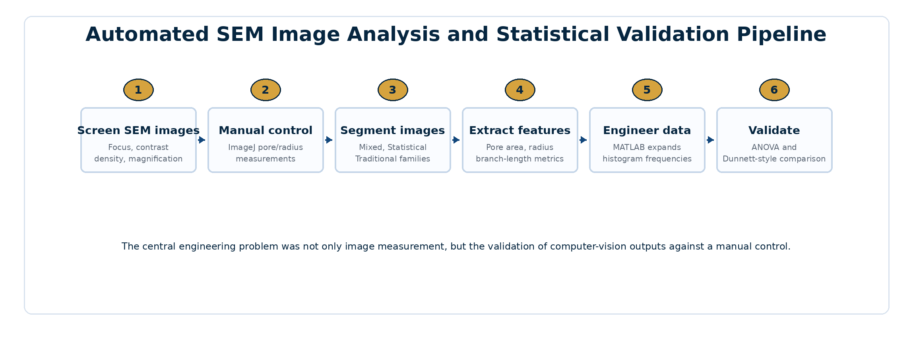
Executive Summary
Objective. Develop and validate a reproducible pipeline for quantifying fibrin clot microstructure from SEM images using manual measurements, automated segmentation, data conversion, and statistical validation.
Why this matters. Fibrin network morphology is not just visual texture. Fiber radius, pore area, branching, and density can influence permeability, mechanical behavior, and susceptibility to clot breakdown. A rigorous image-analysis workflow can turn high-resolution micrographs into quantitative engineering data.
Primary engineering contribution. The project evaluated whether automated segmentation outputs could approximate manual ImageJ measurements. It also converted exported histogram-frequency data into observation-level arrays with MATLAB, enabling formal statistical comparison between automated outputs and manual controls.
- 48 SEM images screened and 16 selected for validation based on image-quality criteria.
- Automated outputs were compared against manual ImageJ controls using ANOVA/Dunnett-style logic.
- Traditional segmentation performed best overall, with the strongest radius performance and a tie for pore-area validation.
- The final package connects SEM imaging, computer vision, MATLAB data conversion, and statistical validation into one reproducible workflow.
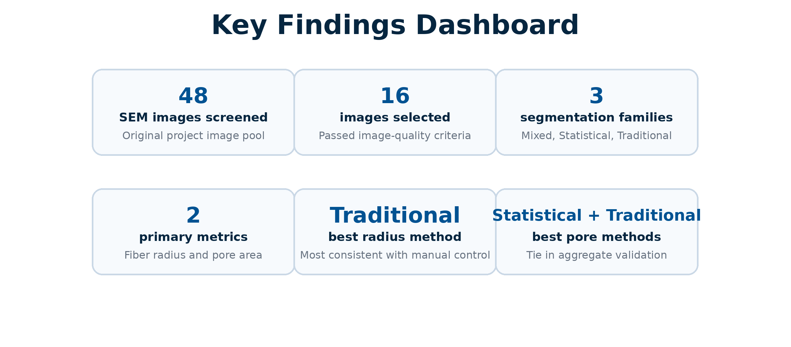
1. Background and Research Motivation
Hemostasis prevents blood loss after injury while preserving normal circulation. Primary hemostasis involves platelet adhesion and aggregation, while secondary hemostasis produces a fibrin-rich network that stabilizes the clot. Thrombin converts soluble fibrinogen into insoluble fibrin, and fibrin monomers assemble into protofibrils, fibers, and eventually a cross-linked three-dimensional network. That network is not simply a passive scaffold: its fiber diameter, pore morphology, branching density, and spatial organization influence the clot's mechanical behavior and biological performance.
Fibrin networks are mechanically complex biomaterials. They are porous, extensible, compressible, and viscoelastic. Dense networks with thinner fibers and smaller pores are often associated with reduced permeability and greater resistance to fibrinolysis, whereas looser networks with thicker fibers and larger pores may be more permeable and more susceptible to lysis. Because clot microstructure can reflect and influence clot stability, thrombosis, and fibrinolytic response, quantitative measurement of fibrin architecture is a meaningful biomedical engineering problem [3], [5], [7], [8].
SEM provides high-resolution visualization of fibrin networks, but SEM images alone are qualitative. Human observers can describe whether a network appears dense or loose, but automated and statistical methods are needed to transform visual morphology into reproducible measurements. The central gap addressed by this project is the gap between high-resolution visualization and reliable quantification.
2. Literature-Informed Design
The project design was informed by three groups of literature. First, fibrin structure literature establishes that clot morphology is biologically meaningful. Variables such as thrombin concentration, fibrinogen concentration, pH, ionic strength, and calcium concentration influence fibrin formation, network density, and fibrinolytic susceptibility [7], [8], [11]. Second, SEM image-analysis literature shows that fiber diameter, porosity, intersection density, and branch length can be quantified from segmented images [2], [3]. Third, measurement-precision literature emphasizes that manual fiber measurement is susceptible to operator selection bias and that training, standard criteria, and automation can improve reproducibility [1].
DiameterJ was selected because it provides an ImageJ-based pathway for segmenting grayscale SEM images into binary fiber/background images and extracting structural descriptors such as fiber diameter and pore properties. However, automated outputs are only valid if segmentation preserves real morphology. This is why the project did not simply run automated software; it compared automated outputs to manual controls and developed selection criteria for segmentation quality.
| Literature theme | Project implication |
|---|---|
| Fibrin morphology relates to permeability, stiffness, and fibrinolysis. | Quantifying pore area and fiber radius is scientifically meaningful. |
| Manual SEM measurement is accepted but slow and operator-dependent. | Manual ImageJ measurement can serve as a control, but automation is needed for scale. |
| Segmentation quality strongly affects image-analysis output. | Algorithm outputs must be visually screened and statistically validated. |
| Histogram outputs are common in image-analysis tools. | MATLAB conversion was needed to expand histogram frequencies into analyzable vectors. |
3. Experimental Design and Workflow
The study began with 48 SEM images. Sixteen images were selected for analysis after screening for magnification, focus, fiber visibility, contrast balance, background noise, and fiber density. Images at 2000x to 10000x magnification were prioritized because individual fibrin strands were visible enough for manual and automated analysis. Cropped images were used when full fields introduced excessive noise, background artifacts, or regions unlikely to produce reliable segmentation.
Each selected image was analyzed in two parallel ways. The manual pathway used ImageJ to establish the control measurements. The automated pathway used DiameterJ to generate multiple segmentation outputs from Mixed, Statistical, and Traditional algorithm families. The project then selected one representative segmentation from each family based on visual criteria. The final selected images were analyzed for fiber radius and pore morphology.
| Stage | Implementation | Why it mattered |
|---|---|---|
| Image calibration | Scale was set so pixel measurements could be converted into micrometer-based units. | Enabled quantitative comparison across images. |
| Manual pore measurement | Freehand selection was used to trace enclosed pores that were not part of the image border. | Created a manual baseline for pore area. |
| Manual radius measurement | Straight-line measurements were taken perpendicular to fiber direction; diameter values were divided by two. | Created a manual baseline for fiber radius. |
| Automated segmentation | Mixed, Statistical, and Traditional families generated candidate binary segmentations. | Allowed comparison of competing computer vision outputs. |
| Data conversion | MATLAB expanded exported histogram-frequency data into observation-level arrays. | Prepared automated outputs for statistical testing. |
| Statistical validation | ANOVA and Dunnett-style interpretation compared automated methods against manual controls. | Identified the most reliable segmentation family. |
3.1 SEM Image Selection Criteria
The quality of the SEM image was the first determinant of whether the automated workflow could produce meaningful data. A segmentation algorithm cannot reliably recover morphological information that is absent, blurred, distorted, or obscured in the original image. For that reason, the project developed screening criteria before algorithm comparison. The final selected images prioritized high magnification, sharp fiber edges, limited background noise, uniform brightness and contrast, visible individual fibers, and representative fiber density.
Image quality was especially important because poor contrast or fiber overlap can alter both measured pore area and measured fiber radius. Large gaps between fibers may cause the software to interpret background as part of the fiber network, while excessive overlap can merge nearby fibers into a single region. The best candidate images were those in which fiber boundaries were distinguishable and the field of view reflected a dense, representative network.
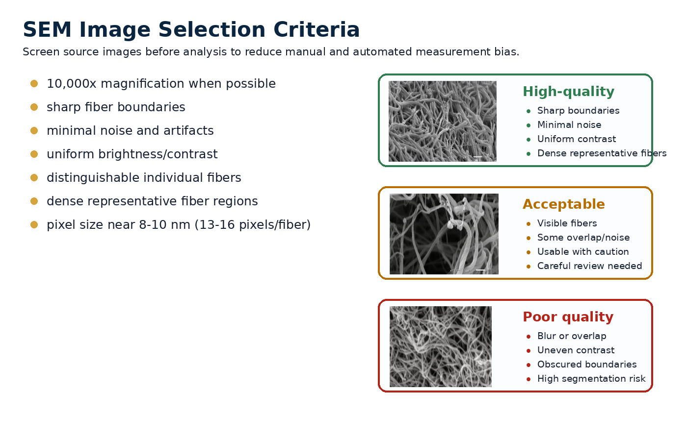
3.2 Segmented Image Criteria for Selection
After initial image screening, each selected SEM image produced multiple candidate binary segmentations. The segmentation step converted grayscale fiber networks into black-and-white images in which fibers could be measured computationally. This transformation was necessary for automated quantification but also introduced the risk of artifacts. Therefore, segmentation outputs were not accepted automatically.
Each candidate segmentation was evaluated using a visual rubric. Acceptable outputs preserved continuous fibers, avoided black spots at fiber intersections, limited partial fiber breakage, represented actual fibers rather than background artifacts, and maintained fiber widths similar to the source image. Rejected outputs included over-segmentation, under-segmentation, merged fibers, false pore detection, and skeletonization artifacts. The selected output from each algorithm family was the one that best preserved the original network morphology.
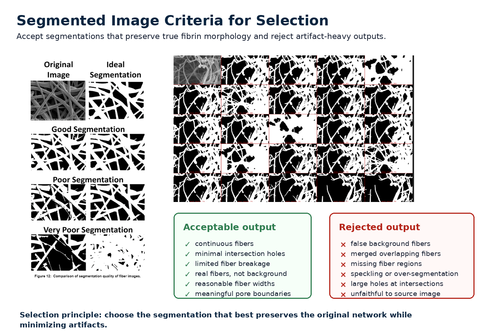
3.3 Manual Image Analysis (ImageJ)
Manual ImageJ measurements served as the control group for the entire validation study. This choice was important because the objective was not simply to generate automated measurements; the objective was to determine whether automated measurements were sufficiently similar to a trained manual baseline. The manual pathway required scale calibration, brightness/contrast adjustment, pore tracing, fiber radius measurement, and data export.
For pore measurement, only fully enclosed pores were traced. Regions connected to the edge of the image were excluded because they could not be confidently bounded. For fiber radius measurement, fibers were measured perpendicular to the fiber direction to approximate the local diameter. The measured diameter values were divided by two to obtain radius values, which were then compared against automated radius outputs.
The manual process was intentionally conservative. It reduced some of the computational errors seen in poor segmentations, but it also introduced human labor and potential observer bias. This tradeoff is precisely why the manual results were treated as a validation baseline rather than a scalable long-term solution.
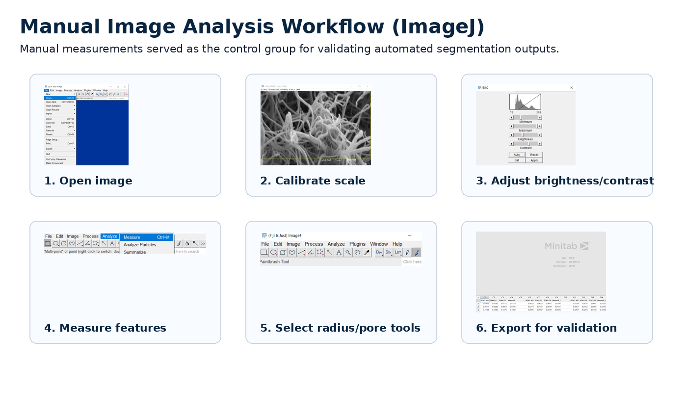
| Manual task | Tool or action | Control value produced |
|---|---|---|
| Scale calibration | Set scale using image scale bar and pixel-to-micrometer conversion. | Comparable physical units across images. |
| Brightness/contrast adjustment | Adjust image visibility while preserving actual fiber structure. | Clearer manual identification of fibers and pores. |
| Pore tracing | Freehand selection of enclosed pores. | Manual pore area distribution. |
| Fiber measurement | Straight-line measurements perpendicular to fiber axis. | Manual radius distribution after diameter-to-radius conversion. |
| Data export | Export measured results for spreadsheet and statistical analysis. | Manual control columns for ANOVA/Dunnett comparison. |
4. Actual Image Processing Outputs
The figures below use actual images and exported outputs from the project. They show how the same cropped SEM image was interpreted by different segmentation families and how DiameterJ converted a binary network into skeleton, fiber, radius, and pore outputs.
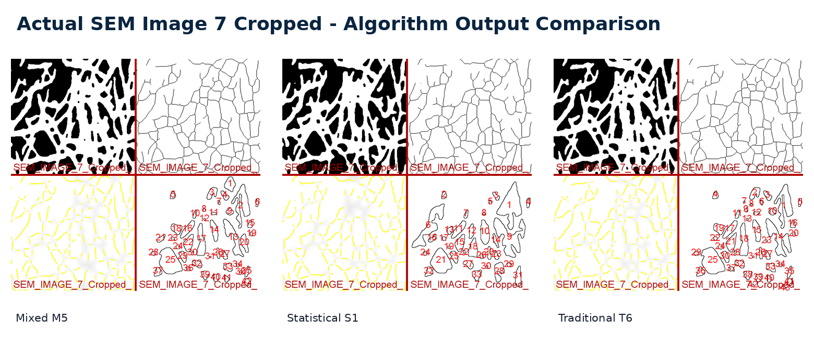
4.1 Binary Segmentation and Radius Mapping
The automated pathway begins with binary segmentation, but it does not end there. After segmentation, the software skeletonizes the fiber network, extracts branch lengths, identifies pore regions, and generates radius histograms. Comparing these outputs across segmentation families provides a direct view of how algorithm choice influences downstream measurements.
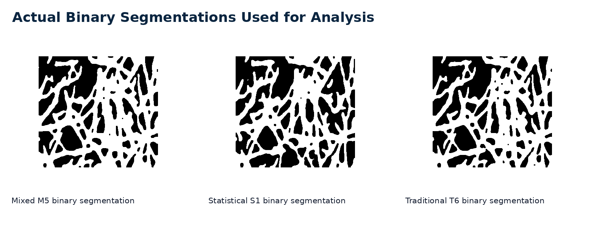
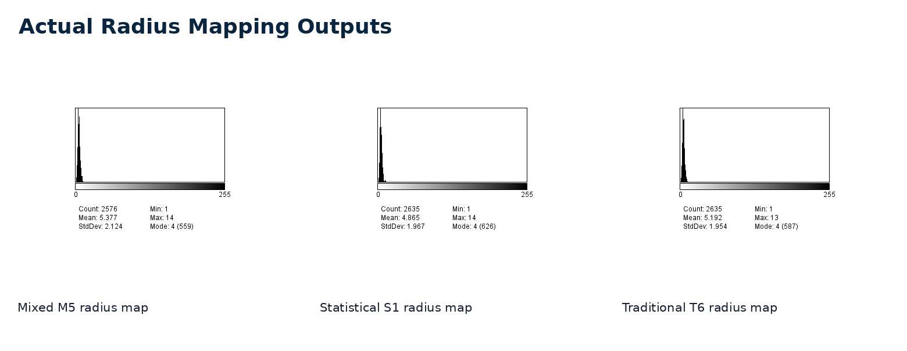
5. Data Figures from Actual CSV Exports
SEM Image 7 Cropped was provided with actual CSV exports, including radius histograms, pore data, branch lengths, and total summary files. These figures were regenerated directly from those data files.
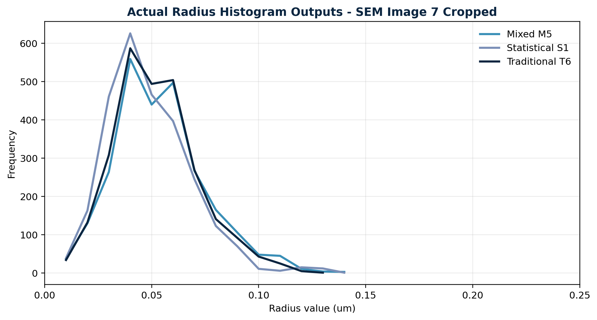
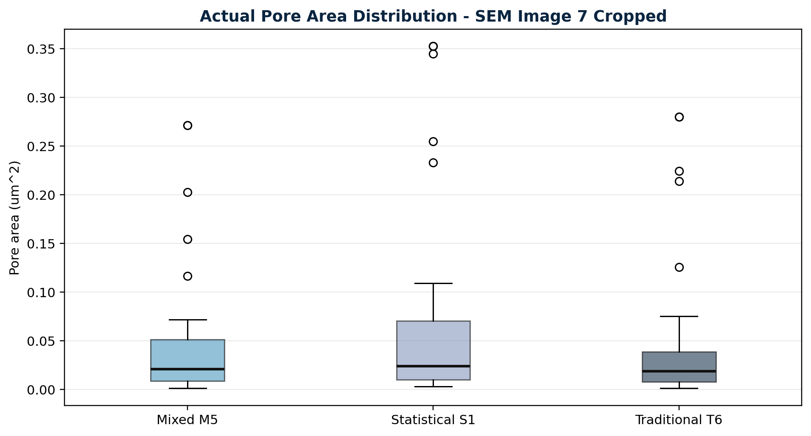
5.1 Skeleton and Summary Metrics
Skeleton branch length and summary statistics provided additional descriptions of network topology. These outputs helped evaluate whether the segmentation preserved enough structure to support pore and fiber measurements.
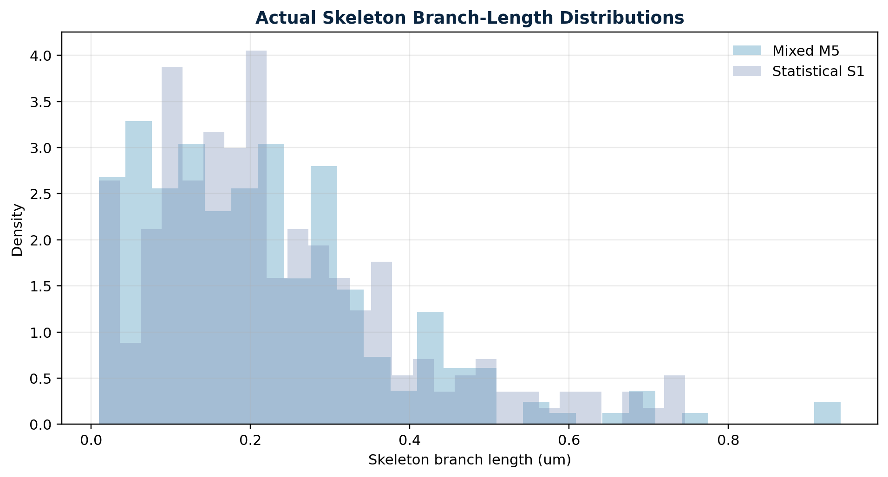
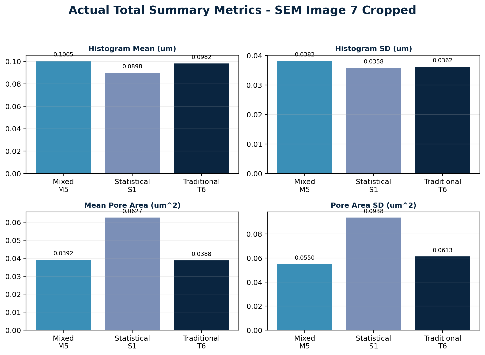
SEM Image 7 Cropped summary table
| Segmentation | Radius mean (um) | Radius SD (um) | Mean pore area (um²) | Pore SD (um²) | Pores counted |
|---|---|---|---|---|---|
| Mixed M5 | 0.1005 | 0.0382 | 0.0392 | 0.0550 | 46 |
| Statistical S1 | 0.0898 | 0.0358 | 0.0627 | 0.0938 | 37 |
| Traditional T6 | 0.0982 | 0.0362 | 0.0388 | 0.0613 | 47 |
6. Aggregate Validation Results
The aggregate project dataset compared automated outputs against manual measurements across sixteen SEM images. The final report used p-values, Dunnett grouping, and difference-of-means logic to determine which segmentation family was most similar to the manual control. Statistical and Traditional segmentations tied for pore analysis, while Traditional segmentation performed best for fiber radius. Because Traditional performed best on radius and tied on pore area, it was interpreted as the most reliable overall method.
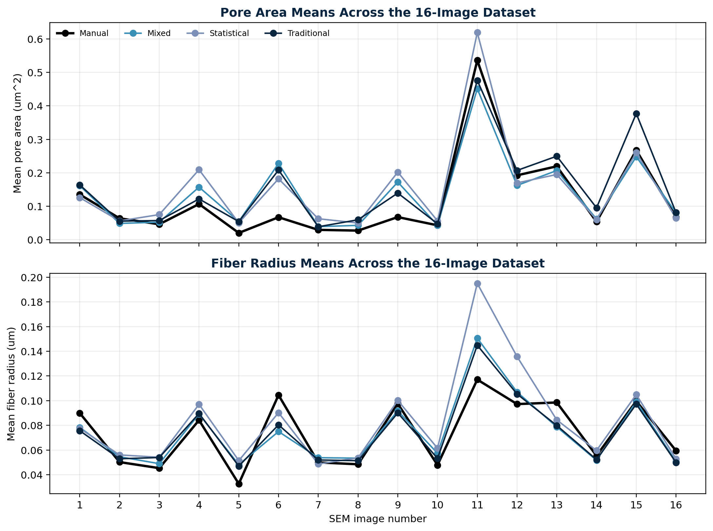
6.1 Algorithm Ranking and Validation Matrix
The validation tally reflects the original interpretation method used in the project report. A secondary closest-mean check is included as a descriptive comparison but does not replace the project logic, which relied on p-values, Dunnett grouping, and difference of means relative to the manual control.
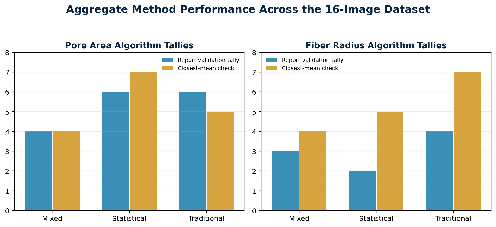
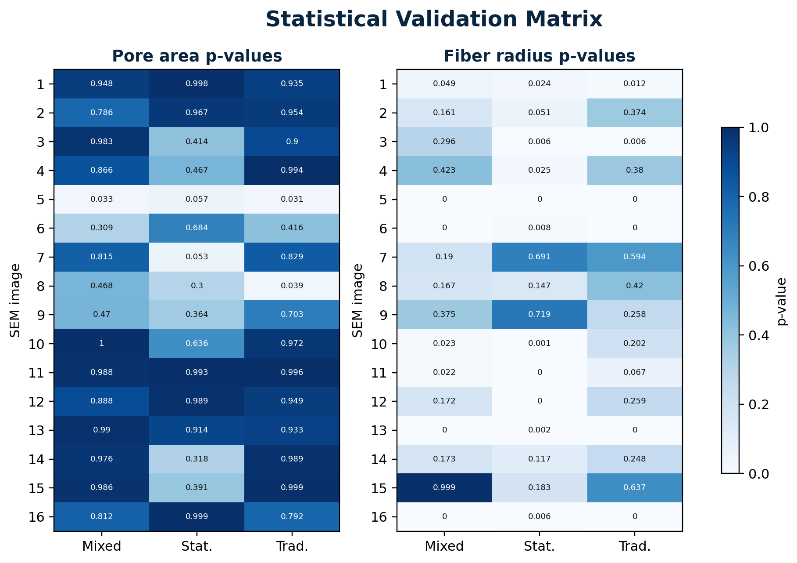
6.2 Interpretation of Algorithm Behavior
Fiber radius was more stable than pore area because radius is a local measurement taken across individual fibers. Pore area is a network-level measurement that depends on complete enclosure, segmentation continuity, and correct distinction between background and true pore space. Small breaks in a fiber boundary can split or eliminate pores, while merged fibers can create false boundaries. This explains why pore analysis showed greater variability and why multiple algorithm families performed well depending on image structure.
The Traditional algorithm family was interpreted as strongest overall because it performed best for radius and tied for pore analysis. This result does not mean that the other families were unusable. Instead, it suggests that algorithm choice should be matched to image quality, fiber density, and the measurement being prioritized. A future automated tool could use image-quality scoring to recommend the best segmentation family before analysis begins.
7. Code and Data Engineering
A key engineering contribution was the conversion of radius histogram outputs into observation-level data. The code below repeats each radius value according to the frequency exported from the image-analysis software. This allowed the data to be pasted into statistical software as a direct comparison group rather than only a summary distribution.
% Excerpt from Radius_Conversion.m
% Convert radius histograms into observation-level vectors.
% Each radius value is repeated according to its exported frequency.
SEM7_M5_final_array = get_array(SEM7_M5)';
SEM7_S1_final_array = get_array(SEM7_S1)';
SEM7_T6_final_array = get_array(SEM7_T6)';
function [true_array] = get_array(array)
true_array = [0];
for i = 1:length(array)
num_indices = array(2,i);
value = array(1,i);
for j = 1:num_indices
true_array(end+1) = value;
end
end
endThis conversion step matters because the core validation was not just visual. The project needed data structures that could support ANOVA and Dunnett-style comparisons against manual controls. Turning histogram-frequency outputs into observation-level arrays made the automated outputs statistically usable.
7.1 Algorithm Development Logic
The radius conversion script solved a practical data-format problem. Automated image-analysis software exported radius measurements as histogram bins and frequencies. Statistical analysis, however, required observation-level columns where each measurement appeared as an individual value. The MATLAB function bridged those formats by expanding each radius bin according to its frequency count.
| Input | Transformation | Output | Why it mattered |
|---|---|---|---|
| Radius bin values | Read each numeric radius value from the exported histogram table. | Candidate measurement values. | Preserved the original measurement scale. |
| Frequency counts | Repeat each radius value according to its frequency. | Observation-level vector. | Reconstructed the distribution for statistical testing. |
| Expanded vector | Transpose and export for spreadsheet organization. | Column-ready dataset. | Made automated results comparable to manual measurements. |
| Manual control column | Combine with automated groups. | Statistical input table. | Enabled ANOVA and Dunnett-style comparisons. |
The programming contribution is significant because it shows that the project was not only a software demonstration. It required data engineering decisions to transform image-analysis exports into statistically valid inputs.
8. Statistical Validation Framework
The manual ImageJ measurements were treated as the control group. Each automated segmentation family was compared against the control using one-way ANOVA and Dunnett-style interpretation. The null hypothesis was that the difference between the automated segmentation and the manual control was zero, meaning the automated method was statistically similar to manual measurement. The alternative hypothesis was that the automated and manual measurements differed.
The selection logic used two layers. First, if Dunnett grouping indicated similarity to the control, that segmentation family was favored. Second, when grouping did not distinguish a clear best method, the difference of means relative to the manual control was used. This approach allowed the study to select a practical algorithm even when multiple methods were statistically similar.
| Validation element | Meaning |
|---|---|
| Manual control | Baseline values measured directly in ImageJ. |
| ANOVA | Tested whether measurement groups differed in mean value. |
| Dunnett comparison | Compared each automated method against the manual control. |
| p-value greater than 0.05 | Indicated no statistically detected difference from the manual control. |
| Difference of means | Used to rank methods when statistical grouping did not produce a clear winner. |
9. Appendix F Reconstruction: Technical User Manual
Appendix F was one of the strongest parts of the original project because it transformed the analysis into a reproducible procedure. The public version reconstructs that manual as a professional workflow. The workflow starts with opening and calibrating the SEM image, continues through segmentation selection and manual measurement, and ends with MATLAB conversion and statistical validation.
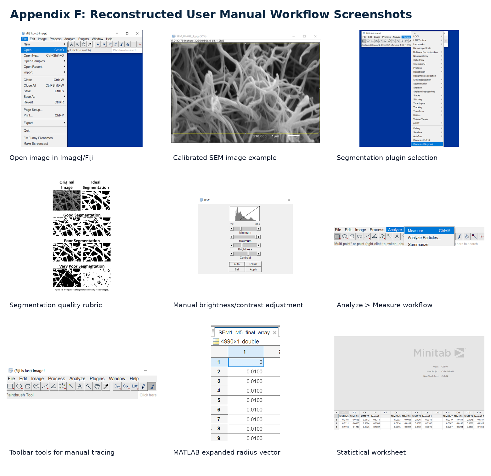
9.1 Setup and Image Calibration
The workflow begins by opening the SEM image in ImageJ/Fiji and calibrating the image scale so that pixel-based measurements convert into real micrometer units. Calibration is essential because both manual and automated outputs must be expressed in the same units before statistical comparison. Without calibration, radius and pore-area values would remain image-specific pixel counts rather than physical measurements.
After calibration, the image was visually inspected for focus, contrast, noise, and fiber visibility. Images that lacked distinct fiber boundaries or contained excessive overlap were less likely to produce reliable segmentation. This quality screening step protected the analysis from treating every image as equally suitable.
9.2 Segmentation Screening and Automated Batch Analysis
Candidate segmentations were screened for black spots at fiber intersections, partial fibers, background artifacts, unrealistic fiber diameter, and merged overlapping fibers. The strongest segmentation was the one that most accurately preserved whole representative fibers while minimizing artifacts. Once the best segmentation from each algorithm family was selected, images were placed into a best-segmentation workflow and processed for DiameterJ outputs.
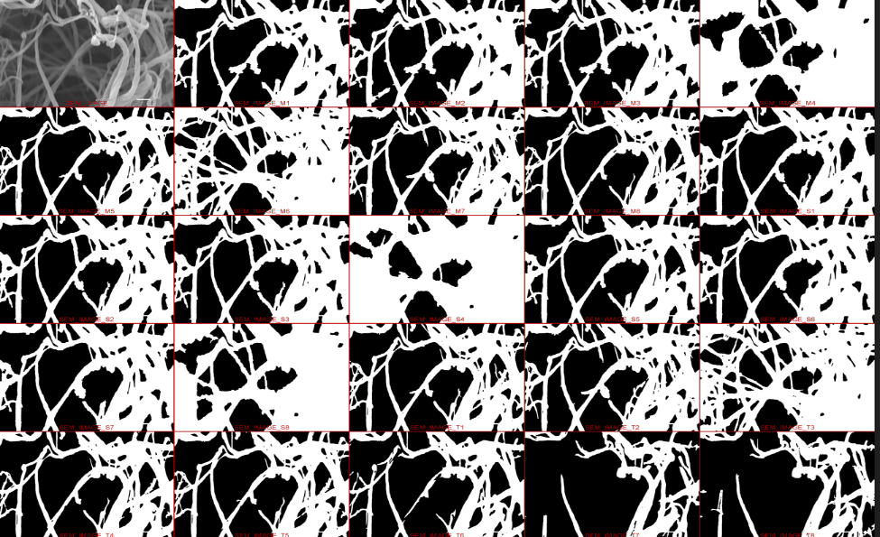
9.3 Manual Baseline Measurement
Manual pore analysis used the freehand selection tool to trace enclosed pores that were not part of the image border. Manual radius analysis used straight-line measurements perpendicular to the fiber axis. Diameter measurements were converted to radius values because radius was the parameter compared against automated outputs.
The manual baseline was labor-intensive, but it gave the project an interpretive anchor. Automated outputs were not treated as correct simply because they were generated by software. They were accepted only when they approximated the manual control and satisfied segmentation-quality review.
10. Appendix-Derived Image Evidence
The appendices contained far more visual evidence than the first public draft. The updated publication uses additional images from the appendices to show image screening, segmentation review, statistical output inspection, and automated feature extraction. These figures are included as a curated visual appendix rather than a raw dump of every original page.
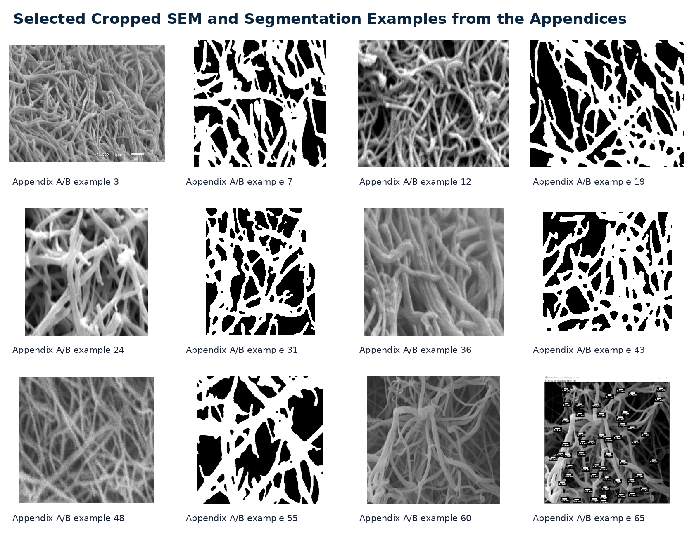
10.1 DiameterJ Output Gallery
Each DiameterJ output collage captures multiple processing stages. The binary segmentation represents the detected fiber network; skeletonization reduces the network to centerlines; fiber interpretation identifies measurable regions; and pore detection identifies enclosed spaces after the skeleton and fiber network are processed.
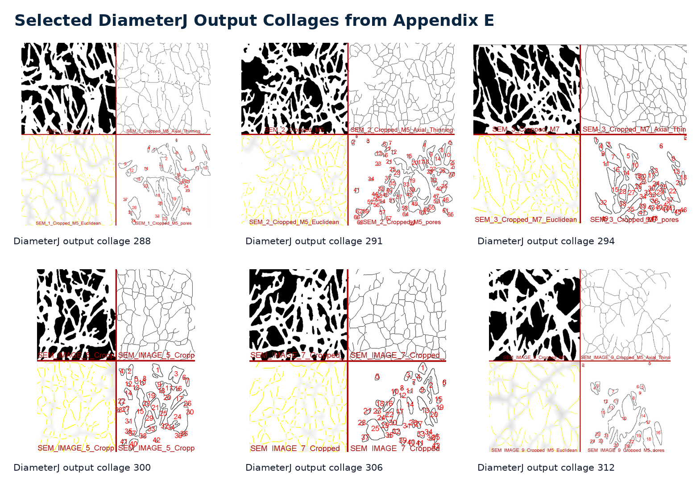
10.2 Statistical Output Gallery
The statistical appendices documented the quantitative validation process. Histograms, probability plots, residual plots, interval plots, and summary reports helped interpret whether automated measurements matched the manual control and whether residual behavior supported the analysis.
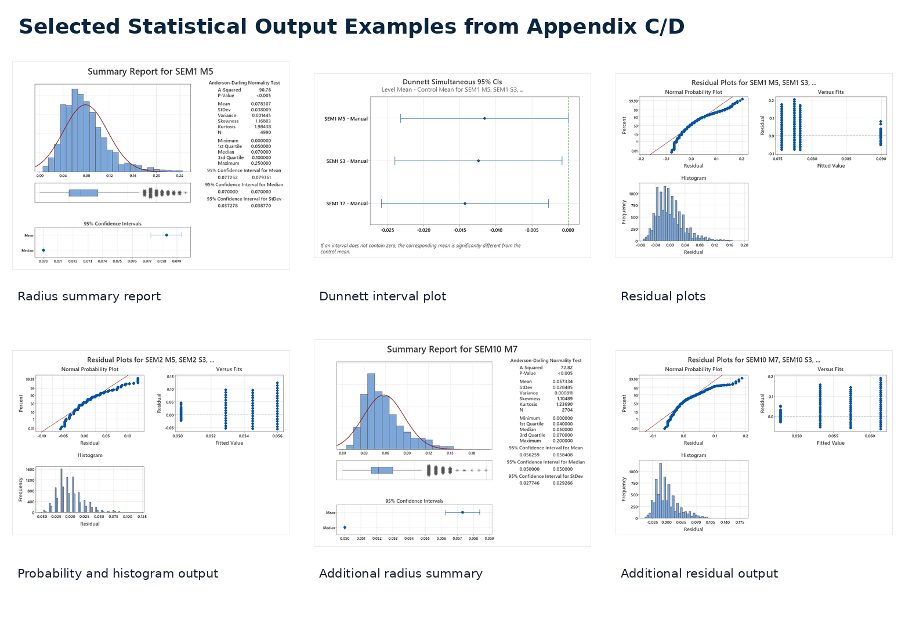
11. Discussion
The project demonstrates a complete biomedical engineering measurement pipeline. It begins with biological motivation, proceeds through image acquisition and preprocessing, applies competing segmentation methods, transforms software exports into analyzable data, and validates automated outputs against manual controls. That sequence is what elevates the work beyond a simple image-processing exercise.
The main technical finding was that Traditional segmentation was the strongest overall method for this dataset, particularly for fiber radius. Statistical segmentation performed strongly for pore analysis, but pore area was inherently more variable because it depends on network enclosure and segmentation continuity. Mixed segmentation was useful in selected cases but was not consistently strongest across the full dataset.
The most important limitation is image quality. Blurry images, uneven contrast, dense overlap, and large gaps between fibers can cause segmentation artifacts. Some automated outputs may merge adjacent fibers or interpret background regions as fibers. For this reason, automated analysis should not be treated as a fully independent black box. A robust workflow requires quality screening, selected manual validation, and statistically grounded acceptance criteria.
11.1 Sources of Error and Failure Modes
The most common failure modes were caused by image quality and segmentation behavior. Poor focus can make fiber boundaries indistinct. Uneven brightness can cause the algorithm to treat background intensity as structure. Overlapping fibers can be merged into a single artificial region. Large gaps between fibers can be interpreted as oversized pores or background artifacts. These issues are particularly important because pore area is a network-level measurement that depends on correct boundary continuity.
| Error source | Effect on analysis | Mitigation |
|---|---|---|
| Blur or lack of sharpness | Obscures fiber boundaries and reduces segmentation reliability. | Prioritize sharply focused images and exclude poor fields. |
| Uneven brightness/contrast | Produces false fibers or missing fiber regions after thresholding. | Use controlled contrast adjustment and image selection criteria. |
| Overlapping fibers | Merges adjacent structures and distorts pore boundaries. | Select representative regions with distinguishable fibers. |
| Large background gaps | Can be misidentified as structural pores or non-fiber regions. | Screen for densely packed, representative fiber networks. |
| Partial fibers at image borders | Biases pore and radius measurements. | Exclude border-connected pores and use crop criteria. |
12. Future Directions
The next stage is to convert the validated workflow into a reproducible image-analysis package. The updated approach would include automated image-quality scoring, texture analysis, algorithm recommendation, open analysis notebooks, and machine-learning based segmentation screening. These directions build directly from the limitations identified in the project: image quality strongly affects segmentation, and manual review remains necessary unless quality can be scored automatically.
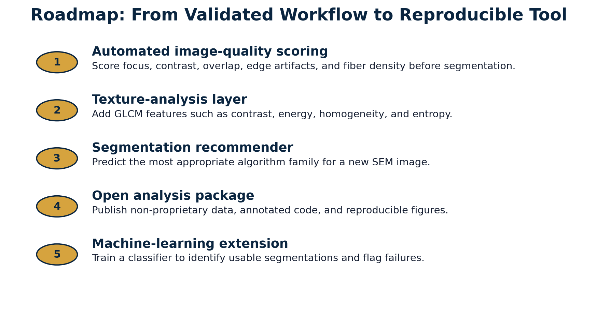
12.1 Automated quality scoring
The next implementation should automatically score image quality before segmentation. Candidate metrics include sharpness, signal-to-background contrast, local brightness uniformity, edge artifacts, percent fiber coverage, and degree of overlap. Images below a quality threshold could be excluded before wasting time on segmentation.
12.2 Texture analysis
Texture features such as contrast, energy, homogeneity, entropy, and correlation could be calculated from grayscale images before binarization. These features may capture network organization that pore area and fiber radius alone do not fully describe [4], [6].
12.3 Machine learning classifier
With more labeled data, a classifier could predict which segmentation output is most likely to match manual measurements. A second classifier could identify poor segmentations. The current project already supplies a labeled structure: selected segmentations, rejected outputs, manual controls, and statistical outcomes.
13. Conclusion
This project developed and validated an automated SEM image-analysis workflow for quantifying fibrin clot microstructure. It used manual ImageJ measurement as a control, evaluated multiple segmentation families, converted histogram outputs into observation-level arrays with MATLAB, and compared automated outputs using statistical validation. The strongest overall interpretation favored Traditional segmentation, especially for fiber radius, while pore area analysis showed greater variability and a tie between Statistical and Traditional segmentation.
As a professional portfolio publication, the work demonstrates Jordan Christopher Lyles' experience in biomedical engineering, computer vision, image segmentation, MATLAB programming, quantitative microscopy, technical documentation, and statistical validation. The final presentation is suitable for a personal website, a downloadable PDF publication, and a companion GitHub repository.
Recommended GitHub repository layout
fibrin-clot-sem-image-analysis/
README.md
publication/
jordan_christopher_lyles_fibrin_clot_publication.pdf
web/
index.html
assets/
code/
Radius_Conversion.m
radius_conversion_excerpt.m
data/
SEM_IMAGE_7_Cropped_M5_Radius Histo.csv
SEM_IMAGE_7_Cropped_M5_Pore Data.csv
SEM_IMAGE_7_Cropped_S1_Radius Histo.csv
SEM_IMAGE_7_Cropped_T6_Radius Histo.csv
figures/
algorithm_comparison.png
radius_histogram.png
pvalue_heatmap.pngReferences
- N. A. Hotaling et al., "Training to Improve Precision and Accuracy in the Measurement of Fiber Morphology," PLOS ONE, 2016. doi:10.1371/journal.pone.0167664.
- N. A. Hotaling, K. Bharti, H. Kriel, and C. G. Simon, "DiameterJ: A validated open source nanofiber diameter measurement tool," Biomaterials, 2015. doi:10.1016/j.biomaterials.2015.05.015.
- A. Daraei et al., "Automated Fiber Diameter and Porosity Measurements of Plasma Clots in Scanning Electron Microscopy Images," Biomolecules, 2021. doi:10.3390/biom11101536.
- F. Marongiu et al., "Clot Characterization by Multidisciplinary Approach: Biochemical and Imaging Parameters in a Hypocoagulative Setting," Journal of Public Health Research, 2021. doi:10.4081/jphr.2021.2358.
- M. Zabczyk et al., "Loose Fibrin Clot Structure and Increased Susceptibility to Lysis Characterize Patients with Central Acute Pulmonary Embolism," Thrombosis and Haemostasis, 2021. doi:10.1055/s-0040-1718762.
- S. A. Shah, P. Santago, and B. K. Rubin, "Quantification of biopolymer filament structure," Ultramicroscopy, 2005. doi:10.1016/j.ultramic.2005.04.007.
- A. S. Wolberg, "Thrombin generation and fibrin clot structure," Blood Reviews, 2007. doi:10.1016/j.blre.2006.11.001.
- A. S. Wolberg, "Determinants of fibrin formation, structure, and function," Current Opinion in Hematology, 2012. doi:10.1097/MOH.0b013e32835673c2.
- A. J. Gale, "Current Understanding of Hemostasis," Toxicologic Pathology, 2011. doi:10.1177/0192623310389474.
- R. Litvinov and J. Weisel, "What Is the Biological and Clinical Relevance of Fibrin?" Seminars in Thrombosis and Hemostasis, 2016. doi:10.1055/s-0036-1571342.
- A. S. Wolberg and R. A. Campbell, "Thrombin generation, fibrin clot formation and hemostasis," Transfusion and Apheresis Science, 2008. doi:10.1016/j.transci.2007.12.005.